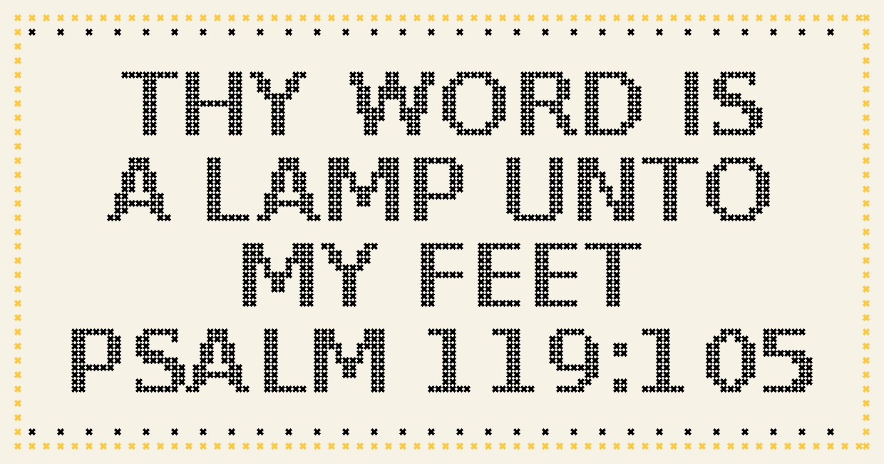
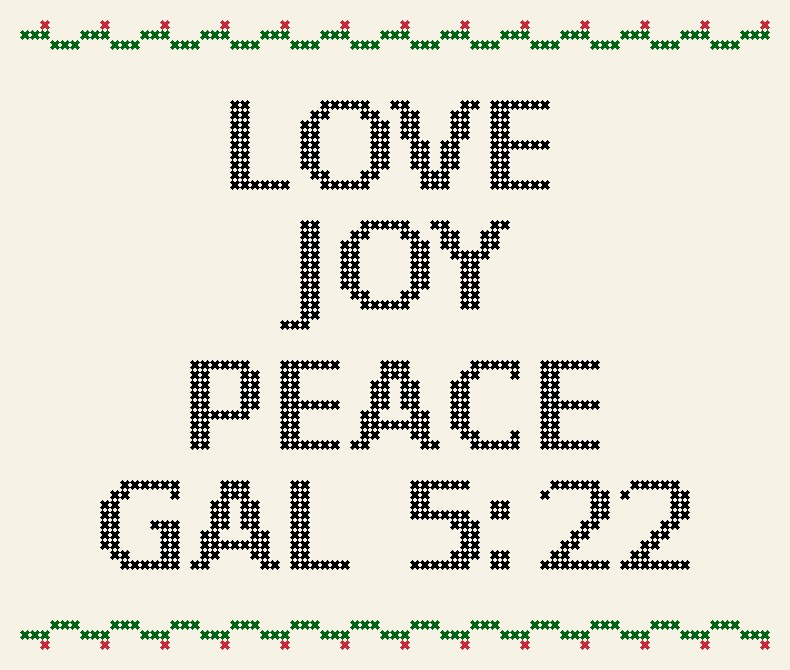
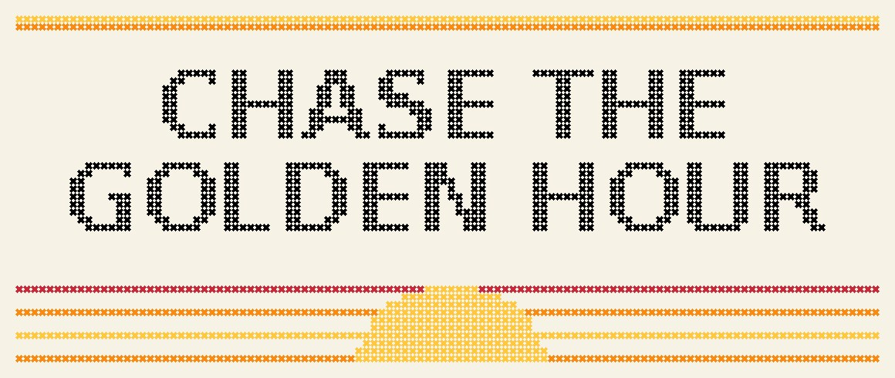

Free Cross-Stitch Patterns, Scavenger Hunts & Charades
Offline things to do together: stitch a verse or a reminder, hunt for things outside or around the house, or play a round of charades with a built-in timer. Everything prints, and most of it works on a phone too.
Cross-stitch patterns

"Thy Word Is a Lamp" Cross-Stitch PatternA free KJV Psalm 119:105 cross-stitch chart in black with a gold border. Beginner friendly "Watch Ye, Stand Fast" Cross-Stitch PatternA bold KJV 1 Corinthians 16:13 cross-stitch chart for a man's office, garage or study. Ful
"Watch Ye, Stand Fast" Cross-Stitch PatternA bold KJV 1 Corinthians 16:13 cross-stitch chart for a man's office, garage or study. Ful- "Drink Your Water" Cross-Stitch PatternA cheerful little reminder for the kitchen or desk, with a border of water drops. Two colo

"Love Joy Peace" Fruit of the Spirit Cross-Stitch PatternThe first three of the fruit of the Spirit (Galatians 5:22) framed by a green vine with re
"Chase the Golden Hour" Cross-Stitch PatternA sunset-striped cross-stitch chart for anyone who stops to watch the sky. Four colours, f
Scavenger hunts
- Sunset & Sky Scavenger Hunt15 things to spot in the evening sky, from the first star to the Earth's shadow.
- Backyard Creature Scavenger Hunt15 small creatures and clues to find outside, no special gear needed.
- Home Safety Scavenger Hunt15 safety things to find (or notice are missing) in 20 minutes, room by room.
- Bible Verse Scavenger Hunt15 famous verses to find with a Bible, with an answer key for leaders.
- Grocery Store Math Scavenger Hunt15 math and reading missions to do on a normal shopping trip.
Charades & Pictionary
- Bible Charades40 Bible stories and people to act out, with a built-in timer and score.
- Date Night Charades for Couples40 date-night moments to act out for each other, from slow dancing to a burnt dinner.
- Family Game Night Pictionary Words40 draw-it words from easy to tricky, with a random picker and a 60-second timer.